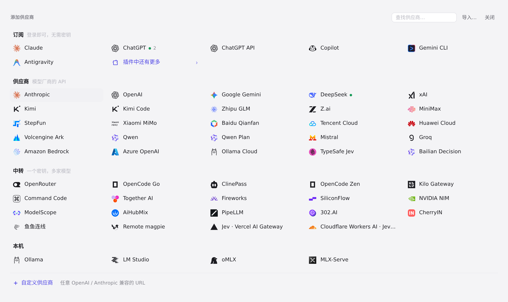
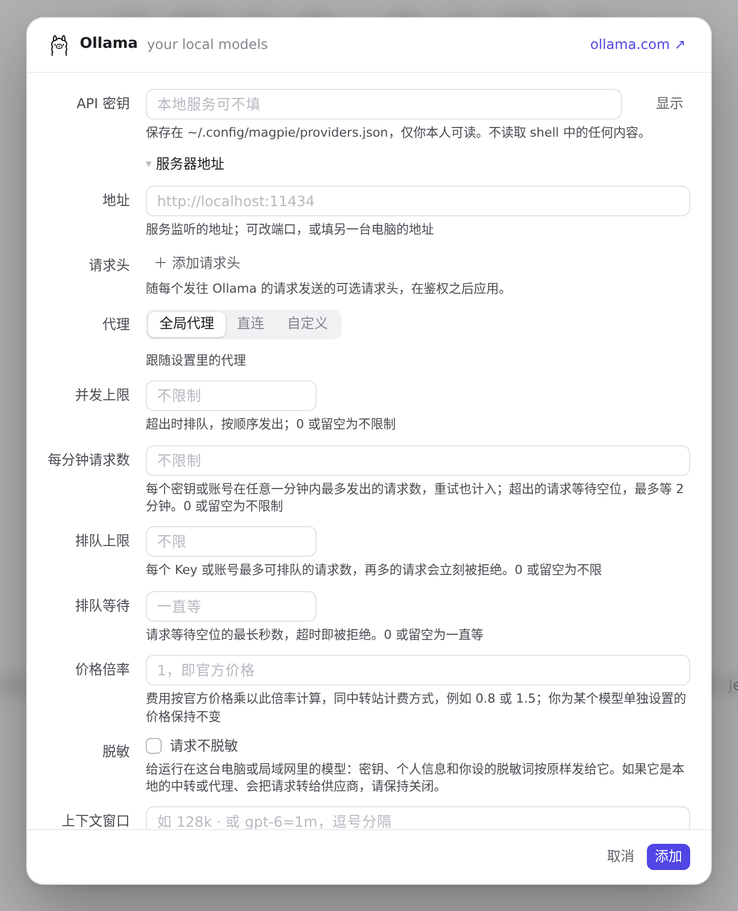
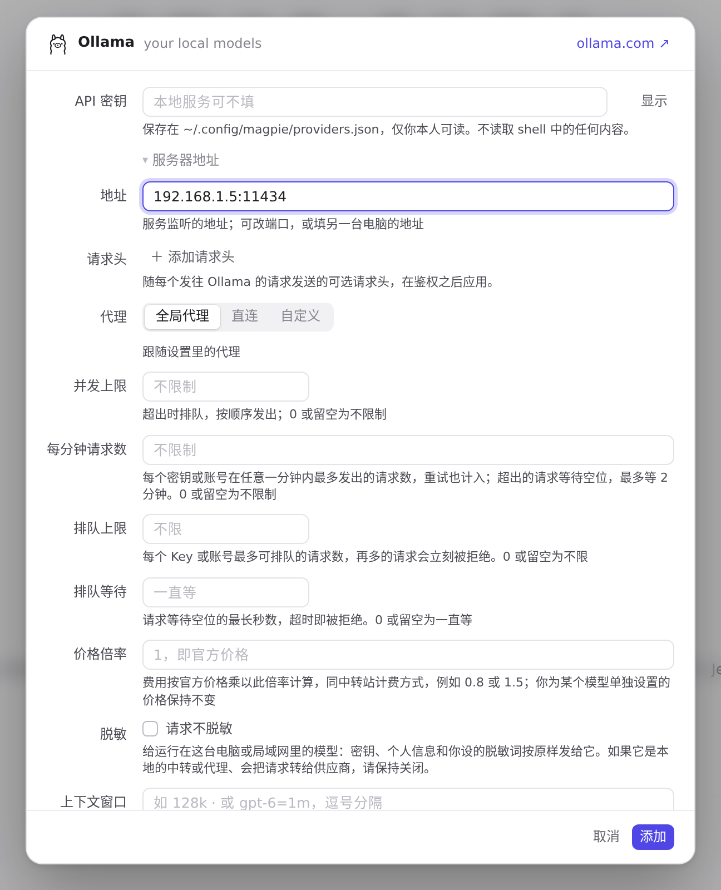
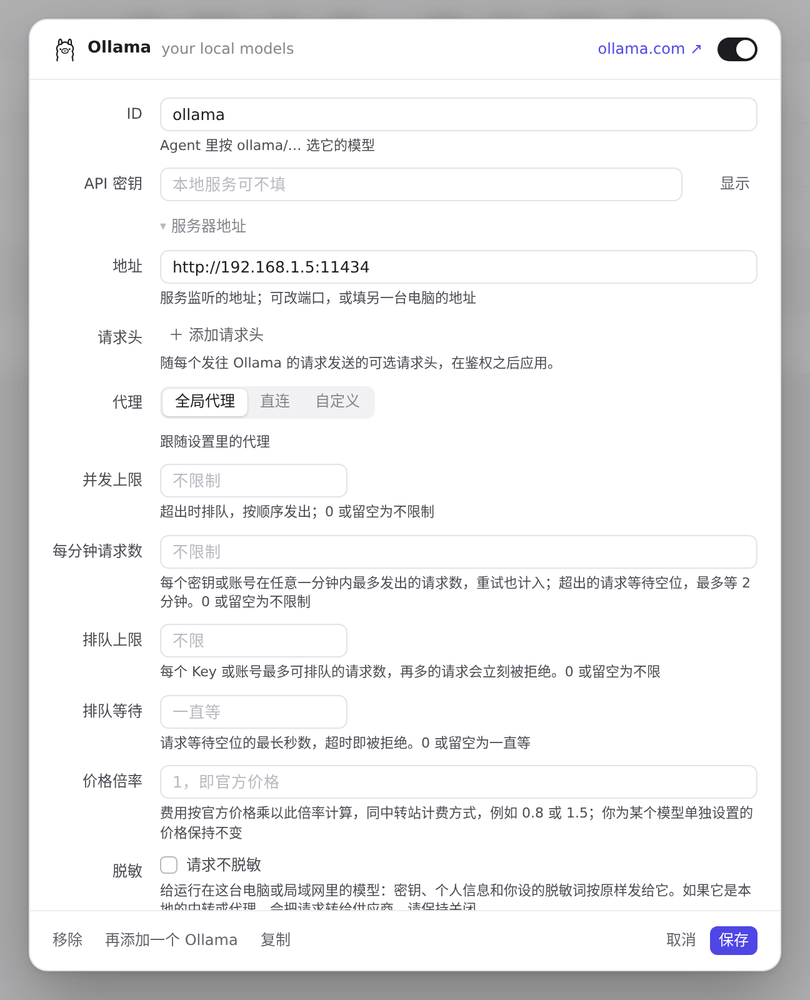
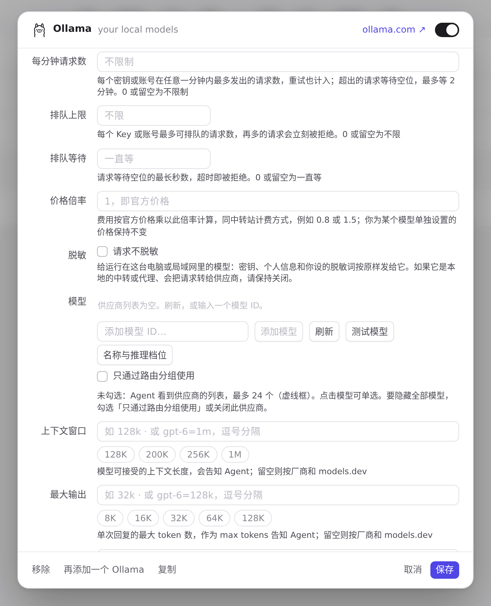
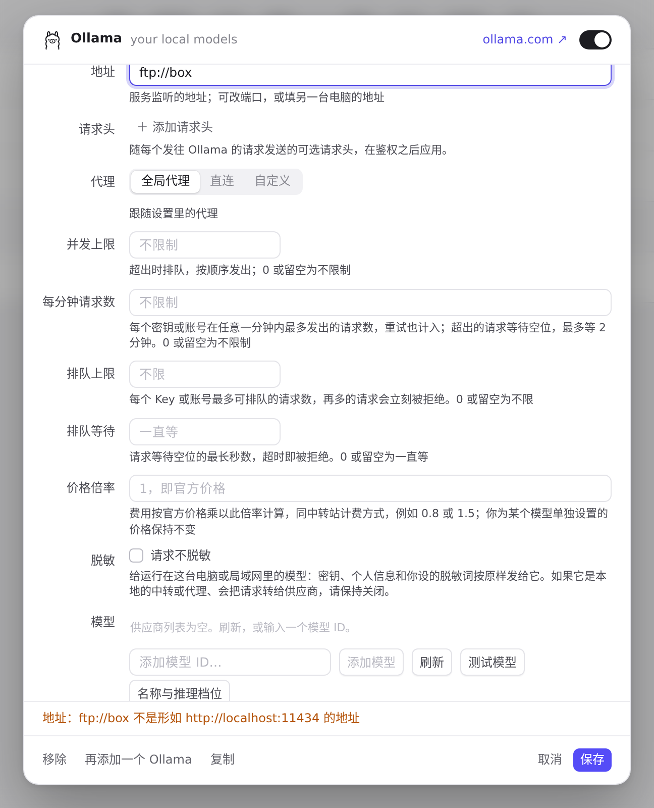

#1165 界面预览
commit e63cf18 · 回到 PR · 本地预设（Ollama、LM Studio、oMLX、MLX-Serve）的添加/编辑编辑器在密钥下方新增「服务器地址」区（默认折叠），可把各 API 的 URL 移到别的端口或另一台电脑上：终结点预览随所填地址变化，测试与保存按新地址走，地址不合法时保存被拒并展开该区；同时 LM Studio/oMLX/MLX-Serve 的说明改为「local server, port …by default」。
红线是鼠标走过的轨迹，红色圆环是一次点击；底部文字是这一步在做什么。空格暂停，← → 逐段查看。

本地预设填服务器地址并添加 · 添加面板里的本地预设
 本地预设填服务器地址并添加 · Ollama 编辑器：密钥下方折叠的「服务器地址」
本地预设填服务器地址并添加 · Ollama 编辑器：密钥下方折叠的「服务器地址」
 本地预设填服务器地址并添加 · Ollama 编辑器：密钥下方折叠的「服务器地址」
本地预设填服务器地址并添加 · Ollama 编辑器：密钥下方折叠的「服务器地址」

本地预设填服务器地址并添加 · 地址为空，占位符是预设默认地址

本地预设填服务器地址并添加 · 填入地址后的编辑器与终结点预览
 本地预设填服务器地址并添加 · 添加后的供应商列表
本地预设填服务器地址并添加 · 添加后的供应商列表

编辑已保存的本地预设：地址、测试与非法地址 · 再次打开：地址区展开，显示保存的地址

编辑已保存的本地预设：地址、测试与非法地址 · 测试用编辑器里的地址发起

编辑已保存的本地预设：地址、测试与非法地址 · 点「保存」之后的编辑器